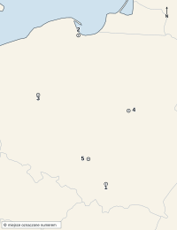
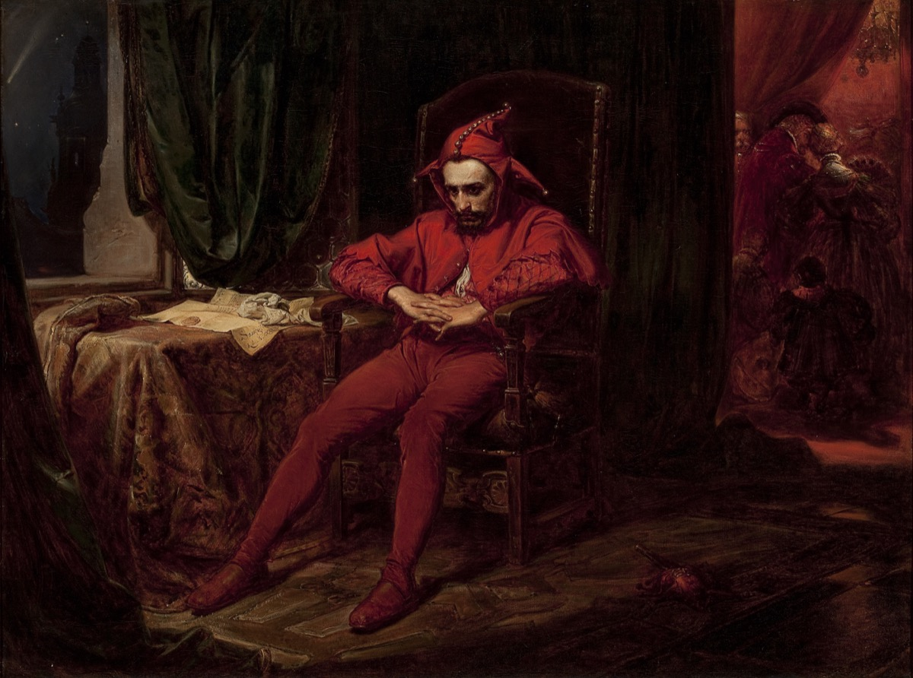

KOD UCZNIA:
Materiał autorski do ćwiczeń, opracowany na podstawie regulaminu szczegółowego oraz archiwalnych arkuszy etapu szkolnego Kujawsko-Pomorskiego Kuratora Oświaty z lat 2018/2019–2025/2026. Nie jest oficjalnym arkuszem konkursowym.
Dopasuj hasło do opisu. Wpisz litery A–F. Jedna odpowiedź jest zbędna.
| 1. Ateński reformator, który w 594 r. p.n.e. zniósł niewolę za długi i podzielił obywateli na cztery klasy majątkowe według dochodów. | |
| 2. Polityk, który ok. 508 r. p.n.e. podzielił obywateli na dziesięć nowych, terytorialnych plemion i wprowadził radę pięciuset. | |
| 3. Procedura głosowania skorupkami, w której zgromadzenie mogło skazać obywatela zagrażającego demokracji na dziesięcioletnie wygnanie. | |
| 4. Najwyższy organ władzy w demokracji ateńskiej, w którym każdy pełnoprawny obywatel mógł zabrać głos i głosować. | |
| 5. Ateński mąż stanu, za którego rządów w V w. p.n.e. demokracja ateńska i kultura miasta osiągnęły swój szczyt. |
Uzupełnij tekst. W każdą lukę wpisz właściwe określenie.
Cesarz (1), po zwycięstwie nad rywalem Maksencjuszem pod mostem Mulwijskim w 312 r., rok później wydał wraz ze współrządcą edykt tolerancyjny, znany jako edykt (2) (313 r.), kończący prześladowania chrześcijan. W 325 r. zwołał do miasta (3) pierwszy sobór powszechny w dziejach Kościoła, na którym potępiono naukę kapłana (4), głoszącego, że Syn Boży nie jest równy Ojcu. Sobór ustalił jednolite wyznanie wiary, zwane (5). Kilka lat później cesarz przeniósł stolicę cesarstwa nad Bosfor, do miasta, które odtąd nosiło jego imię – (6).
Oceń prawdziwość zdań. Wpisz P (prawda) albo F (fałsz).
| 1. Wojnę domową w Anglii wywołał spór o zakres władzy między królem Karolem I Stuartem a parlamentem. | |
| 2. Armia parlamentu, tzw. Nowy Model Armii, walczyła pod dowództwem Olivera Cromwella. | |
| 3. Król Karol I został uniewinniony przez sąd parlamentarny i w 1649 r. przywrócony na tron. | |
| 4. Po egzekucji króla w Anglii ogłoszono republikę, zwaną Wspólnotą Narodową (Commonwealth). | |
| 5. Po śmierci Cromwella monarchię obalono na zawsze i Anglia pozostała republiką do dziś. |
Uporządkuj wydarzenia chronologicznie. Wpisz cyfry od 1 (najwcześniejsze) do 6 (najpóźniejsze).
| A. Zawarcie traktatu w Tordesillas, dzielącego świat pozaeuropejski między Hiszpanię i Portugalię. | |
| B. Powrót do Hiszpanii ocalałego okrętu wyprawy Ferdynanda Magellana, dowodzonego przez Juana Sebastiána Elcano. | |
| C. Opłynięcie Przylądka Dobrej Nadziei przez Bartolomeu Diasa. | |
| D. Dotarcie Vasco da Gamy drogą morską do Indii. | |
| E. Dotarcie wyprawy Krzysztofa Kolumba do wysp Ameryki Środkowej. | |
| F. Wyruszenie floty Ferdynanda Magellana w pierwszą wyprawę dookoła świata. |
W zadaniach 1–5 zaznacz albo wpisz literę jednej poprawnej odpowiedzi.
| 1. Trzecia wyprawa krzyżowa (1189–1192) była odpowiedzią na: A. najazd Turków seldżuckich na Hiszpanię B. zdobycie Konstantynopola C. zdobycie Jerozolimy przez Saladyna D. upadek Bizancjum |
|
| 2. Jednym z przywódców trzeciej krucjaty, angielskim królem zwanym Lwie Serce, był: A. Jan bez Ziemi B. Wilhelm Zdobywca C. Edward I D. Ryszard I | |
| 3. Głównym muzułmańskim przeciwnikiem krzyżowców podczas trzeciej wyprawy był sułtan: A. Saladyn B. Bajazyd C. Sulejman Wspaniały D. Mehmed II | |
| 4. Trzecia krucjata zakończyła się: A. odzyskaniem Jerozolimy przez chrześcijan na trwałe B. całkowitą klęską i zaniechaniem dalszych wypraw krzyżowych C. rozejmem, który zapewnił pielgrzymom dostęp do Jerozolimy, pozostającej w rękach muzułmanów D. przyłączeniem Egiptu do państw krzyżowych | |
| 5. Podczas marszu na Ziemię Świętą utonął w rzece w Azji Mniejszej cesarz niemiecki: A. Fryderyk Barbarossa B. Otton I C. Henryk IV D. Karol Wielki |
Dopasuj hasło do opisu. Wpisz litery A–F. Jedna odpowiedź jest zbędna.
| 1. Ustrój wprowadzony przez Dioklecjana, w którym cesarz otwarcie przyjmował boskie tytuły i wschodnią etykietę dworską, np. całowanie szat władcy. | |
| 2. System rządów czterech współwładców (dwóch augustów i dwóch cezarów), wprowadzony przez Dioklecjana dla sprawniejszego zarządzania rozległym cesarstwem. | |
| 3. Zarządzenie Dioklecjana z 301 r., ustalające górne granice cen towarów i wysokości płac, mające powstrzymać inflację. | |
| 4. Dobrowolne ustąpienie z tronu – krok, na który jako pierwszy w dziejach Rzymu zdecydował się Dioklecjan w 305 r., osiadając potem w pałacu w Splicie. | |
| 5. Ostatnie i najsurowsze prześladowanie wyznawców chrześcijaństwa w cesarstwie rzymskim, trwające od 303 r. |
Uzupełnij tekst. W każdą lukę wpisz właściwe określenie.
Cesarz bizantyjski (1), panujący w VI w., dążył do odbudowy jedności dawnego cesarstwa rzymskiego. Jego wódz (2) odzyskał dla cesarstwa Afrykę Północną oraz Italię, odbierając je germańskim Wandalom i Ostrogotom. Cesarz nakazał uczonym prawnikom zebranie i uporządkowanie całego prawa rzymskiego w jeden zbiór, znany jako (3). W stolicy cesarstwa, Konstantynopolu, wzniósł wspaniałą świątynię (4), przez wieki największą budowlę sakralną chrześcijaństwa. Duży wpływ na politykę cesarza miała jego żona, była aktorka, cesarzowa (5). Odzyskane ziemie na Zachodzie utrzymały się przy cesarstwie tylko na krótko, częściowo z powodu epidemii dżumy, zwanej od imienia władcy (6).
Oceń prawdziwość zdań. Wpisz P (prawda) albo F (fałsz).
| 1. Karol Wielki został koronowany na cesarza przez papieża w Rzymie w roku 800. | |
| 2. Koronacja Karola Wielkiego odbyła się już w IX wieku. | |
| 3. Państwo Karola Wielkiego po jego śmierci zostało na mocy traktatu w Verdun (843 r.) podzielone między trzech jego wnuków. | |
| 4. Karol Wielki przyjął koronę cesarską z rąk patriarchy Konstantynopola. | |
| 5. Odnowienie nauki i szkolnictwa na dworze Karola Wielkiego, z udziałem uczonego Alkuina z Yorku, nazywamy renesansem karolińskim. |
Uzupełnij tekst. W każdą lukę wpisz właściwe określenie.
Twórcą islamu był urodzony w mieście (1) kupiec (2), który ok. 610 r. zaczął głosić, że jest prorokiem jedynego Boga, zwanego po arabsku (3). Prześladowany przez miejscowych kupców, w 622 r. przeniósł się wraz ze zwolennikami do miasta (4) – wydarzenie to, zwane (5), wyznacza początek muzułmańskiego kalendarza.
Na mapie oznaczono pięć miejsc. Do każdego opisu dopisz właściwy numer 1–5.

Mapa bazowa: Natural Earth 1:50 mln, domena publiczna (CC0), Wikimedia Commons; oznaczenia i opracowanie zadania: własne. Cienkie jasne linie to współczesne granice państwowe, naniesione wyłącznie dla ułatwienia orientacji.
| A. Miasto, pod którym we wrześniu 1655 r. bez walki poddało się pospolite ruszenie wielkopolskie, otwierając Szwedom drogę w głąb kraju. | |
| B. Klasztor, którego obrona na przełomie 1655 i 1656 r. stała się symbolem oporu wobec najeźdźcy i punktem zwrotnym wojny. | |
| C. Stolica królewska, dwukrotnie zdobywana przez wojska szwedzkie i odbijana przez siły Rzeczypospolitej. | |
| D. Dawna stolica królewska w Małopolsce, zdobyta przez Karola X Gustawa jesienią 1655 r. | |
| E. Największy port Rzeczypospolitej nad Bałtykiem, którego mieszczanie odmówili poddania się Szwedom i wytrzymali oblężenie floty. |
F. Podaj rok zawarcia pokoju w Oliwie, który zakończył wojnę ze Szwecją.
Obejrzyj reprodukcję obrazu i wykonaj polecenia.

Jan Matejko, „Stańczyk”, 1862, Muzeum Narodowe w Warszawie; reprodukcja w domenie publicznej (Wikimedia Commons).
1. Podaj imię i nazwisko autora obrazu.
2. Podaj tytuł obrazu i rok jego powstania.
3. Podaj imię królowej, na której dworze rozgrywa się przedstawiona scena.
4. Podaj nazwę miasta na wschodzie, którego utrata na rzecz Moskwy w 1514 r. jest bezpośrednim powodem smutku bohatera obrazu.
5. Jaką funkcję (używając dawnego określenia) pełnił Stańczyk na dworze królewskim?
6. Wyjaśnij, na czym polega kontrast między postacią Stańczyka a tłem obrazu i jaki jest jego sens.
„Jeżeli Żyd zostanie oskarżony przez chrześcijanina o zabicie dziecka chrześcijańskiego, oskarżenie takie musi zostać potwierdzone zeznaniami trzech chrześcijan i trzech Żydów; w przeciwnym razie oskarżyciel poniesie taką karę, jaka groziłaby oskarżonemu.”
Statut kaliski (Ogólna karta swobód żydowskich), 1264 r.; fragment skrócony i uwspółcześniony.
1. Podaj rok wydania przywileju, z którego pochodzi cytat.
2. Podaj imię i przydomek władcy, który wydał ten dokument.
3. Jakiej grupie mieszkańców Polski dokument nadawał opiekę i przywileje prawne?
4. Jak nazywa się oszczercze oskarżenie o mordowanie dzieci chrześcijańskich w celach rytualnych, przed którym zacytowany fragment chronił Żydów?
5. Podaj nazwę miasta, w którym wydano ten dokument, a które nadało mu nazwę.
6. Wyjaśnij, dlaczego władcy polscy w XIII w. byli zainteresowani sprowadzaniem i ochroną ludności żydowskiej.
Oceń, czy podane zjawisko było przyczyną (P), czy skutkiem (S) abdykacji Jana Kazimierza w 1668 r.
| 1. Wieloletnie wojny – potop szwedzki, powstanie Chmielnickiego i wojna z Rosją – wyniszczyły skarb i osłabiły autorytet króla. | |
| 2. Rokosz Lubomirskiego (1665–1666), skierowany przeciw planom obioru następcy tronu za życia króla. | |
| 3. Kolejne, już trzecie z rzędu, bezkrólewie i wolna elekcja nowego władcy Rzeczypospolitej. | |
| 4. Objęcie tronu przez Michała Korybuta Wiśniowieckiego, pierwszego od czasów Piastów rodowitego szlachcica na tronie polskim. |
W zadaniach 1–5 zaznacz albo wpisz literę jednej poprawnej odpowiedzi.
| 1. Michał Korybut Wiśniowiecki został wybrany na króla Polski w roku: A. 1669 B. 1668 C. 1672 D. 1674 |
|
| 2. Podczas jego panowania Turcy zdobyli twierdzę broniącą południowo-wschodnich rubieży Rzeczypospolitej: A. Zbaraż B. Żwaniec C. Kamieniec Podolski D. Chocim | |
| 3. Niekorzystny dla Rzeczypospolitej pokój z Turcją zawarto w 1672 r. w miejscowości: A. Żurawno B. Karłowice C. Chocim D. Buczacz | |
| 4. Na mocy tego pokoju Rzeczpospolita: A. odzyskała Podole B. utraciła Podole z Kamieńcem Podolskim i zobowiązała się do haraczu C. przyłączyła Wołoszczyznę D. zawarła wieczysty pokój z Turcją | |
| 5. Sejm odrzucił warunki tego traktatu, a rewanż za utratę Podola przyniosło wkrótce zwycięstwo pod Chocimiem (1673), odniesione przez hetmana, późniejszego króla: A. Jana Sobieskiego B. Stefana Czarnieckiego C. Jana Kazimierza D. Michała Korybuta Wiśniowieckiego |
Rozwiąż krzyżówkę, a następnie wyjaśnij znaczenie hasła z zaznaczonej kolumny.
| 1. Przywileje wydane przez Kazimierza Jagiellończyka w 1454 r., w których król zobowiązał się nie zwoływać pospolitego ruszenia i nie stanowić nowych praw bez zgody sejmików ziemskich. |
| 2. Przywilej z 1496 r., ograniczający możliwość opuszczania wsi przez chłopów i zwalniający szlachtę z części ceł. |
| 3. Mieszkaniec wsi, przywiązywany na mocy przywileju z zadania 2. coraz silniej do ziemi i pana. |
| 4. Przywilej z 1501 r., wzmacniający władzę senatu kosztem króla, uchylony już cztery lata później. |
| 5. Stan uprzywilejowany, na rzecz którego uchwalano kolejne przywileje w XV i na początku XVI wieku. |
| 1. | ||||||||||
| 2. | ||||||||||
| 3. | ||||||||||
| 4. | ||||||||||
| 5. |
Hasło:
Wyjaśnij, z czym kojarzy się to hasło i do jakiego wydarzenia z 1505 r. nawiązuje. (1 p.)
Dopasuj postać do opisu. Wpisz litery A–E. Jedna odpowiedź jest zbędna.
| 1. Pierwsza żona Zygmunta Augusta, córka cesarza Ferdynanda I Habsburga; zmarła w 1545 r., dwa lata po ślubie. | |
| 2. Matka Zygmunta Augusta, księżniczka włoska, przeciwna małżeństwu syna z litewską magnatką. | |
| 3. Trzecia żona króla, siostra jego pierwszej żony, z którą władca żył w separacji, choć nigdy formalnie się nie rozwiódł. | |
| 4. Druga żona króla, litewska magnatka z rodu Radziwiłłów, poślubiona potajemnie, a ukoronowana na królową w 1550 r. |
Wykonaj polecenia 1–5.
1. Podaj rok koronacji Jadwigi Andegaweńskiej na władczynię Polski.
2. Jakim tytułem, podkreślającym pełnię władzy monarszej, a nie tylko rolę żony króla, określano formalnie Jadwigę w akcie koronacyjnym?
3. Podaj imię i przydomek wielkiego księcia litewskiego, za którego Jadwiga wyszła za mąż w 1386 r.
4. Jak nazywał się akt zawarty rok wcześniej, w 1385 r., na zamku na Litwie, który poprzedził to małżeństwo i przewidywał chrzest Litwy?
5. Podaj imię ojca Jadwigi, króla Węgier i Polski, po którego śmierci wynikł spór o sukcesję.
Oceń prawdziwość zdań. Wpisz P (prawda) albo F (fałsz).
| 1. Sejm grodzieński w 1793 r. odbywał się pod naciskiem wojsk rosyjskich obecnych w mieście obrad. | |
| 2. Sejm grodzieński zatwierdził drugi rozbiór Polski. | |
| 3. Posłowie na sejmie grodzieńskim swobodnie i bez przeszkód debatowali nad traktatem rozbiorowym. | |
| 4. Ostatnim aktem sejmu grodzieńskiego było uchwalenie nowej, reformującej ustrój konstytucji. |
Uporządkuj wydarzenia chronologicznie. Wpisz cyfry od 1 (najwcześniejsze) do 6 (najpóźniejsze).
| A. Trzeci rozbiór Polski. | |
| B. Wybuch powstania kościuszkowskiego i zwycięstwo pod Racławicami. | |
| C. Zawiązanie konfederacji targowickiej. | |
| D. Klęska pod Maciejowicami i wzięcie do niewoli Tadeusza Kościuszki. | |
| E. Drugi rozbiór Polski. | |
| F. Wojna w obronie Konstytucji 3 maja. |
Kod ucznia:
| Zadanie | Odpowiedzi | Punkty |
|---|---|---|
| I. Demokracja ateńska | 1 …… 2 …… 3 …… 4 …… 5 …… | |
| II. Sobór nicejski | ||
| III. Wojna domowa w Anglii | 1 …… 2 …… 3 …… 4 …… 5 …… | |
| IV. Wielkie odkrycia | A …… B …… C …… D …… E …… F …… | |
| V. Trzecia krucjata | 1 …… 2 …… 3 …… 4 …… 5 …… | |
| VI. Dioklecjan | 1 …… 2 …… 3 …… 4 …… 5 …… | |
| VII. Justynian Wielki | ||
| VIII. Karol Wielki | 1 …… 2 …… 3 …… 4 …… 5 …… | |
| IX. Początki islamu | ||
| X. Potop szwedzki (mapa) | A …… B …… C …… D …… E …… F …… | |
| XI. Obraz jako źródło | ||
| XII. Statut kaliski | ||
| XIII. Abdykacja Jana Kazimierza | 1 …… 2 …… 3 …… 4 …… | |
| XIV. Wiśniowiecki i Turcja | 1 …… 2 …… 3 …… 4 …… 5 …… | |
| XV. Krzyżówka | ||
| XVI. Żony Zygmunta Augusta | 1 …… 2 …… 3 …… 4 …… | |
| XVII. Koronacja Jadwigi | ||
| XVIII. Sejm grodzieński | 1 …… 2 …… 3 …… 4 …… | |
| XIX. Targowica i rozbiory | A …… B …… C …… D …… E …… F …… | |
| Razem | / 100 |